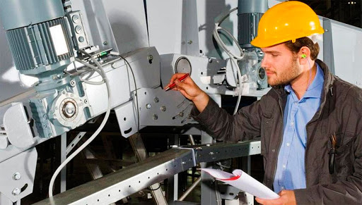

La ingeniería química es una rama de la ingeniería que se encarga del estudio, diseño, manutención, evaluación, optimización, simulación, construcción y operación de todo tipo de elementos en la industria de procesos, que es aquella relacionada con la producción industrial de compuestos y productos cuya elaboración requiere de sofisticadas transformaciones físicas y químicas de la materia. La ingeniería química también se enfoca al diseño de nuevos materiales y tecnologías, es una forma importante de investigación y de desarrollo. Además es líder en el campo ambiental, ya que contribuye al diseño de procesos ambientalmente amigables y procesos para la descontaminación del ambiente. La ingeniería química se fundamenta en las ciencias básicas como matemática (álgebra lineal o superior, cálculo, ecuaciones diferenciales, métodos numéricos, matemática avanzada), las ciencias básicas de la ingeniería química (termodinámica, fenómenos de transporte, cinética química), y disciplinas aplicadas tales como ingeniería de procesos, diseño de reactores, diseño de equipos para procesos químicos, y procesos de separación. También incorpora elementos de ciencias ambientales, biotecnología , ingeniería alimentaria e ingeniería de materiales. Según la Constitución del American Institute of Chemical Engineers, "la ingeniería química es la profesión en la cual el conocimiento de la matemática, química y otras ciencias básicas (ganados por el estudio, experiencia y práctica) es aplicado con juicio para desarrollar maneras económicas de usar materiales y energía para el beneficio de la humanidad". Por ello, el objetivo de la ingeniería química difiere de las ciencias puras como la química o la biología, donde el enfoque es el estudio de fenómenos científicos. Un ingeniero de otras ramas se enfocaría, de acuerdo a su campo, en los elementos para la producción, sean los equipos mecánicos involucrados, elementos electrónicos, los equipos de transmisión y generación de energía eléctrica, gestión de operaciones involucradas en el proceso industrial, sistemas de información manejados.
 La ingeniería industrial es una de las ramas de la ingeniería, y se ocupa de la optimización de uso de recursos humanos, técnicos e informativos, así como el manejo y gestión óptimos de los sistemas de transformación de bienes y servicios, evaluación de sistemas integrados aplicados en campos de personal, riqueza, conocimientos, información, equipamiento, energía, materiales y procesos, con la finalidad de obtener productos de alta calidad o servicios útiles que satisfagan a la sociedad teniendo la consideración del medio ambiente según las leyes de protección ambiental. Utiliza los principios, métodos del análisis, síntesis de la ingeniería y el diseño para especificar, evaluar, predecir y optimizar los resultados generados de tales sistemas. Emplea conocimientos y métodos de otras ciencias específicas y técnicas para determinar, diseñar, especificar, analizar, implementar y mejorar continuamente los sistemas. La ingeniería industrial se hizo muy necesaria después de la Revolución Industrial para garantizar la productividad industrial, es producto de las necesidades fabriles de la clase burguesa de la sociedad capitalista del siglo XIX. Se refiere a la profesión que se especializa en conocimientos de producción (simulación, investigación de operaciones, ingeniería de Métodos, manejos de datos, control de producción y estadística) así como también conocimientos de administración, finanzas y economía. Por lo último es que actualmente un Ingeniero Industrial desempeña muchos cargos en el mundo laboral muy variado desde industria pesada hasta bancos y hospitales. Así como en España, en Brasil, los ingenieros industriales son responsables de todo el proceso de fabricación de los bienes producidos por las industrias y, también, por el proyecto e implementación de las propias plantas industriales. El ingeniero industrial formado en Brasil debe tener una formación integral, que incluya, además del conocimiento en su propia área de especialización (mecánica, eléctrica, química, etc.), también en las demás áreas de la ingeniería, así como en los fundamentos técnicos y científicos de toda la ingeniería. En el caso de las matemáticas, Física Teórica y Experimental, Química Tecnológica, Diseño Técnico, Termodinámica, Electricidad, Mecánica de los Fluidos, Resistencia de los Materiales y otras, que forman parte de la rejilla curricular de un curso de ingeniería plena, pues es de eso que se trata el curso de Ingeniería Industrial en Brasil.